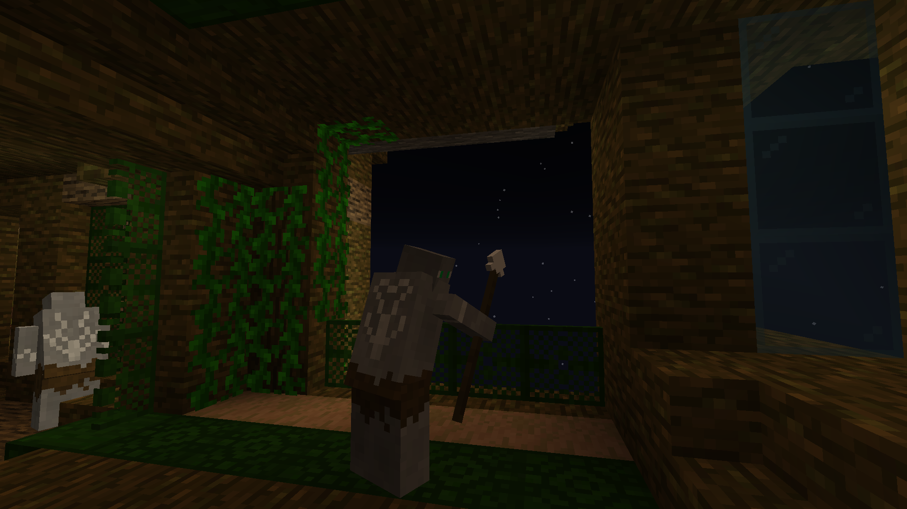
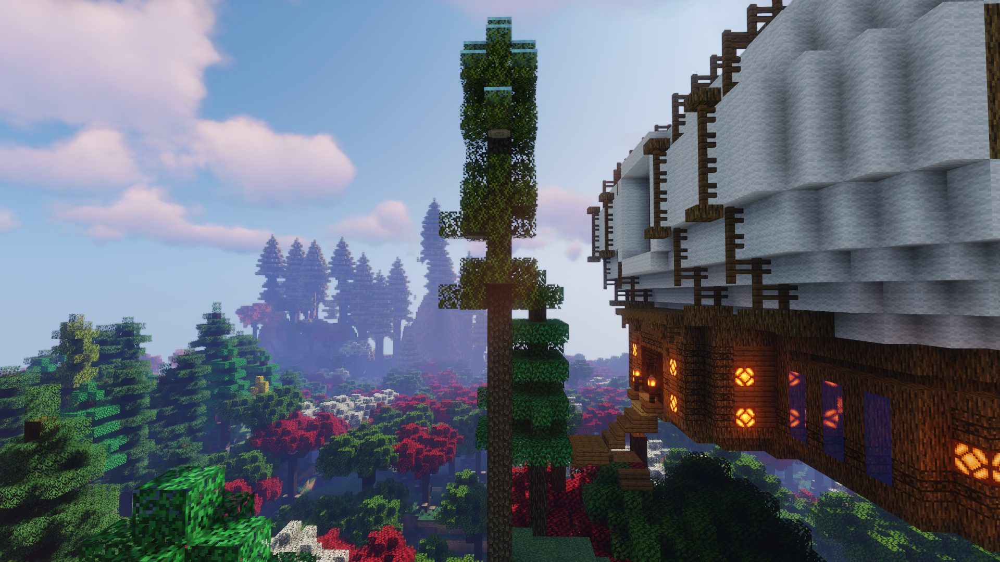
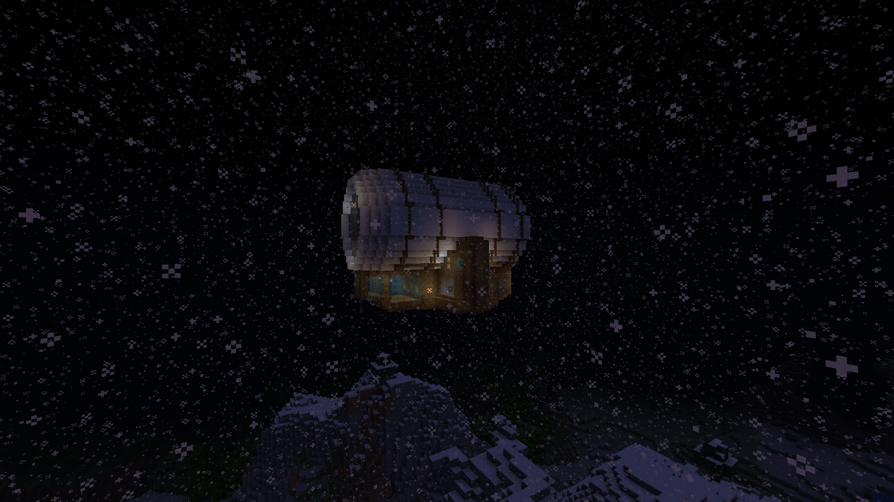

|
Wastelands of Baedoor is first public appearance of Baedoor universe, in form of Minecraft mod adding plenty of
Baedoor-related features: giant airships, firearms of various kind, and plenty of gameplay features.
You could use new blocks to diversify your building needs, farm much more unfarmable resources, fight with new weapons
(such as sabres or throwing knives) or just duel friends with guns - which were added in a way that tried to balance
their high power with other weapons, as to not make them too powerful.
On top of that, airships floating in the sky offered new ways of adventure: you could find bandits and unique loot in
there, but also whole new civilisation living in a jungle!
Released originally 15th March 2021, WoB introduced increasingly bigger updates, to peak during v0.a10 version. After
that, its development was stuck at overscoped v0.a11 release - the one that, while having several minor versions released
with quite high quality additions, eventually resulted in my burnout and hiatus.
Eventually, alongside with my two other Minecraft mods planned, WoB tries to come back - being rewritten currently for
Forge 1.20.1 version of Minecraft. It doesn't come easily though, because
for several reasons, this game
doesn't excite me the same way, and so there's no clear answer whether the mod will be developed further.
Future & How Can I Help?
While I do focus on Project Tamriel/Tamriel Rebuilt and Isle of Ansur right now, it doesn't mean I don't want to
continue WoB - the reason why the mod is still in sort of hiatus is that I need to rethink how to handle it and
cut all unneeded work for it to be fun to me again.
If you want to help this project, the best you can do is to have experience creating Patchouli books - it's
one of bottlenecks that I don't want to cover anymore, yet it will be incredibly important on longer run, if this
project continues. Hit me up on Discord or CurseForge if you are interested.
Team
- Developers
- Toma400 : lead
- Dylanvhs : pixel artist
- Contributors
- TotalBlackSmith : model artist
|



|